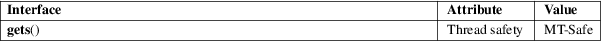

gets − get a string from standard input (DEPRECATED)
Standard C library (libc, −lc)
#include <stdio.h>
[[deprecated]] char *gets(char *s);
Never use this function.
gets() reads a line from stdin into the buffer pointed to by s until either a terminating newline or EOF, which it replaces with a null byte ('\0'). No check for buffer overrun is performed (see BUGS below).
gets() returns s on success, and NULL on error or when end of file occurs while no characters have been read. However, given the lack of buffer overrun checking, there can be no guarantees that the function will even return.
For an explanation of the terms used in this section, see attributes(7).

POSIX.1-2008.
C89, POSIX.1-2001.
LSB deprecates gets(). POSIX.1-2008 marks gets() obsolescent. ISO C11 removes the specification of gets() from the C language, and since glibc 2.16, glibc header files don’t expose the function declaration if the _ISOC11_SOURCE feature test macro is defined.
Never use gets(). Because it is impossible to tell without knowing the data in advance how many characters gets() will read, and because gets() will continue to store characters past the end of the buffer, it is extremely dangerous to use. It has been used to break computer security. Use fgets() instead.
For more information, see CWE-242 (aka "Use of Inherently Dangerous Function") at http://cwe.mitre.org/data/definitions/242.html
read(2), write(2), ferror(3), fgetc(3), fgets(3), fgetwc(3), fgetws(3), fopen(3), fread(3), fseek(3), getline(3), getwchar(3), puts(3), scanf(3), ungetwc(3), unlocked_stdio(3), feature_test_macros(7)